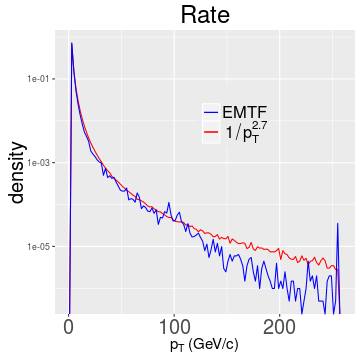
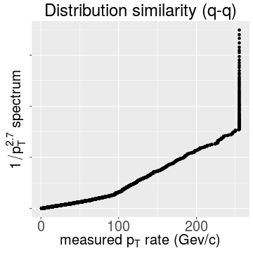
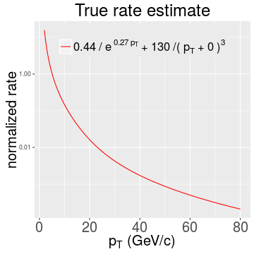

Measured rate spectrum
Low \(p_T\) rate spectrum component
Deconvolution of the “true” underlying rate from the spectrum
Summary
— &twocol
*** =left

*** =right

*** =fullwidth
Clearly seen are two components meeting at $\sim$100 GeV/\(c\) (and the EMTF pT saturation)
Since all of the thresholds of interest are < 100 GeV/\(c\) let's zoom in to the first component
— &twocol
*** =left
Simple power law is a crude approximation, exponent + power law works better:
*** =right
But quantile-quantile plot is not straight \(\rightarrow\) the fit is still rather mediocre, of course:

*** =fullwidth
I'll stick with this parametrization keeping in mind the excluded [1-2] GeV/\(c\) bin
— .class #id
Likelihood \(L(R|r,e) \sim -\prod_i Poiss(r_i | e_i ^j R_j)\) where, as before, \(r_i\) - measured rate above threshold \(i\); \(R_j\) - true rate in bin \(j\) of true \(p_T\); \(e_i ^j\) - efficiency in \(i^{th}\) bin of true \(p_T\) for threshold \(j\)
Closure tests with \(R\) modeled as \(A/e^{\alpha p_T ^{thr}}\) or \(B/(p_T ^{thr}-b)^\beta\) and \(e_i ^j \sim erf(\gamma(p_{T,j} ^{true}-p_{T,i} ^{thr}))\):
| Parameter | \(A^{set}/A^{fit}\) | \(\alpha^{set}/\alpha^{fit}\) | \(B^{set}/B^{fit}\) | \(\beta^{set}/\beta^{fit}\) | \(b^{set}/b^{fit}\) |
|---|---|---|---|---|---|
| \(\gamma\)=100, 1K bins | 1/0.95 | 2/2 | 0/-0.047 | 0/3 | 0/1.1 × 10-4 |
| 0/-0.047 | 0/1 | 1/0.95 | 3/3 | 0/0.0051 | |
| \(\gamma\)=100, 78 bins | 1/0.83 | 2/0.93 | 0/-0.17 | 0/3 | 0/-0.0026 |
| 0/-0.18 | 0/1 | 1/0.81 | 3/3 | 0/0.038 | |
| \(\gamma\)=0.1, 78 bins | 1/1.1 | 2/1 | 0/0.061 | 0/3 | 0/3 × 10-4 |
| 0/0.034 | 0/1 | 1/1 | 3/3 | 0/-0.0059 | |
| real turn-on | 1/0.34 | 2/1.9 | 0/0.46 | 0/3 | 0/0.055 |
| 0/0.45 | 0/1 | 1/0.42 | 3/3 | 0/-0.012 |
— &twocol
Using parametric form for \(R\) and turn-ons \(e\) from the last talk I assess \(R\) from \(r\):
*** =left

*** =right

*** =fullwidth
Test on the right shows ratio of estimated true rate convoluted with turn-on and measured rate
Nothing is ideal, of course, but agreement within $\sim$20% is not a bad thing here
— .class #id
The underlying true rate spectrum consists of multiple components
\(p_T \sim\) [0-5] GeV/\(c\) seems to be falling exponentially, but being suppressed by the turn-on cannot be reliably measured from data
\(p_T \sim\) [5-80] GeV/\(c\) seems to be described well by \(1/p_T^3\) spectrum
\(p_T >\) 80 GeV/\(c\) falls even faster, but presents a little interest